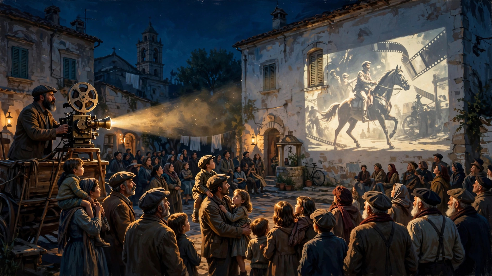
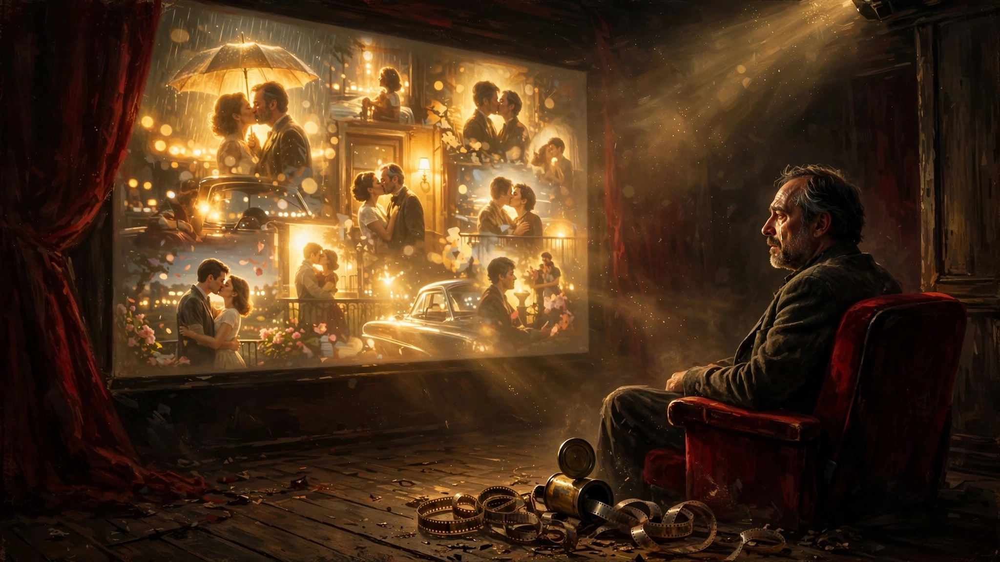

一部电影里的人生
（发一篇原创旧文，完成于 2022 年 3 月 18 日。）
首先，这不是一篇影评，而更像是我个人对《天堂电影院》故事的讲述。因为是经典老电影，就无所谓剧透了。希望你们会喜欢。
意大利西西里海边有一个叫吉安加的小村。这个小村地处偏远，人口稀少，民风淳朴。小村地方虽小但设施齐全。有学校、教堂、广场，甚至还有一家电影院。这家电影院个头不大，但名字却很有气场——天堂电影院。我们的故事就从这家电影院开始。

电影院的放映员阿尔弗雷多是一位留着大胡子、略微有点秃顶、和蔼可亲的中年大叔，他是镇上唯一的放映员，在天堂电影院工作了很多年。多年来，电影一直是吉安加村的娱乐中心，因为那个年代，电影对于所有人来说几乎是唯一的、可负担得起的娱乐来源。正是因为电影在大家心目中的地位，阿尔弗雷多也深受村民喜爱。
而在阿尔弗雷多的众多粉丝当中，最粘人的恐怕就是小学生托托了（大名萨尔瓦多）。托托是个聪明活泼又有点调皮的男孩子，虽然个子很瘦小，但一双黑黑的大眼睛充满了灵气。托托本来有个幸福的家庭，父亲幽默帅气，母亲温柔美丽，还有个可爱的妹妹。可是后来他父亲去俄罗斯参战，不幸英年早逝，家庭的重担就落在了母亲一人身上。因此，作为兄长的托托有时也需要承担一些家庭的责任，例如帮母亲买牛奶等日用品，或者帮忙照顾年幼的妹妹。
另外，托托还在村里的神父那有一份“差事”——在神职活动中担任神父的小助理，例如在神父念诵圣经时帮忙摇摇铃铛什么的。神父有时还挺依赖托托的。例如，有一次托托在工作时打盹，没有在该摇铃时摇铃，结果害得神父忘词儿。
除了家务和神父的差事外，托托更常做也更喜欢做的事是去天堂电影院。如果你以为他去那儿只是为了看电影，那只说对了一半。别忘了他可是阿尔弗雷多最忠实的粉丝。除了是电影院的常客外，托托还经常溜到放映室里，享受一般观众享受不到的“特权”。阿尔弗雷多对托托宠爱有加，允许好奇的托托在放映室里逗留，东看西摸。即使淘气的托托有时恶作剧，给放映机做点小手脚什么的，阿尔弗雷多顶多也就是佯怒着赶走他而已。过不了多久，托托又会在阿尔弗雷多的默许下光顾放映室。
托托有时会光顾着看电影，而忘了妈妈交代的任务。有次他居然拿买牛奶的钱去看电影，出电影院时被妈妈撞了个正着。妈妈问他牛奶买了没，托托一时语塞。正当他不知如何是好时，目睹此事的阿尔弗雷多和同事过来解围。阿尔弗雷多对同事说，你在清理观众座位时是不是发现了些什么。同事刚开始不知阿尔弗雷多的用意，后来在阿尔弗雷多的反复暗示下说的确发现了一张50里拉的钞票（正好是买牛奶的钱）。阿尔弗雷多把钞票交到托托妈妈手里，表示这是托托不小心落下的，并说明托托来电影院看电影是免费的。于是，托托的妈妈转怒为喜，没有责怪托托，并对阿尔弗雷多表示了感谢。
电影院的另一位常客是神父，他享受的可是VIP待遇——专场。不过，他不是来看电影娱乐的（至少表面上不是），而是来履行电影审查员的职责。那个年代，小村里的电影审查工作就交由神父负责。神父是个尽责的审查员，在审片时不会放过任何一个“色情的”画面，而所谓的“色情”画面不过是反映男女真情流露的一些吻戏。发现这类画面时，孤零零坐在观众席前排C位的神父就会高举铃铛猛摇，以提示阿尔弗雷多剪掉相关画面。这时阿尔弗雷多就会拿出一张小纸条插到放映机里的胶卷中做标记，以便之后集中从拷贝中剪掉。

正常放映电影有时会产生一些废弃胶片。当然，由于神父的审查，放映室里还有很多特意剪下来的其他“废弃”胶片。出于好奇，托托没事就在放映室里研究那些胶片，还央求阿尔弗雷送他一些废弃胶片带回家玩。但阿尔弗雷多却不敢答应他。因为当时的胶片易燃，所以阿尔弗雷多担心胶片失火伤及托托和家人。阿尔弗雷多严肃地告诉托托不送他胶片的原因，然后说会替他保存一些废弃胶片，以后再给他。可是调皮的托托心痒难耐，还是趁着阿尔弗雷多不注意偷拿了一些废弃胶片。
一天，阿尔弗雷多送托托回家时，发现托托的母亲怒容满面，见到托托就打。托托边躲边哭，不知做错了什么。阿尔弗雷多正好路过，忙上前问明情况。原来，是托托带回家的那些废弃胶片在一次意外中沾到火星，造成家里失火。所幸妈妈及时发现，救出妹妹，但家里差点被烧光。妈妈为此要教训托托，认为是因为他玩胶片，才差点害死妹妹。阿尔弗雷多试图在一旁劝慰两句，但托托妈妈迁怒于阿尔弗雷多，怪他不该让托托玩胶片。阿尔弗雷多碰了一鼻子灰，也只好知趣地保持沉默。
这一场小风波过后，日子相对平静。托托仍然常常去放映间玩。耳濡目染下，托托对放映设备和放映流程也越来越熟悉。但之后出了一件大事，这件事可以说改变了托托的人生。
一天晚上，电影院的幕布不知怎么出了问题，放映不得不中断。正当扫兴的人群一边起着哄，一边迟迟不愿离去时，阿尔弗雷多灵机一动。他把放映机镜头转向窗外，电影投射到对面一栋楼的墙上。在黑夜中，那面墙上的巨型“银幕”格外显眼。人群顿时安静了下来，大家继续专注地欣赏这场别致的“露天电影”。
可好景不长，正当阿尔弗雷多和托托沉浸在“露天电影”中不能自拔时，放映机胶片意外失火。火势很快从放映室蔓延到整个电影院。人群作鸟兽散。在大火中，阿尔弗雷多不幸吸入浓烟昏迷。托托不顾安危，冲入放映室，拼死救出阿尔弗雷多。电影院彻底烧毁，可怜的阿尔弗雷多也脸部受伤，双目失明。
电影院后来重建了，但接下来的问题是，阿尔弗雷多残疾了，谁来放映电影？大家自然把目光投向了托托。虽然托托这时还是个孩子，但他也是小镇上除了阿尔弗雷多外唯一会放映电影的人。因此，托托顺理成章地接过了阿尔弗雷多的班，成为了新的小镇电影放映员。
时光荏苒，小镇的一切如常，而放映员托托已从懵懂少年成长为朝气蓬勃的青年。一次偶然的机会，托托认识了来到小镇的美丽少女艾莲娜，情窦初开的托托很快堕入爱河。可惜双方身世悬殊，艾莲娜的父亲是银行家，家境殷实，而托托只是一穷二白的小镇放映员。这种差距一开始就为他们的爱情蒙上了一层阴影。
托托向阿尔弗雷多倾诉自己爱上一个女孩却不敢表白的事。阿尔弗雷多给他讲了个士兵和公主的故事，大意是：一个士兵爱上了高贵的公主，公主告诉士兵，假如你在我的窗下等待一百个日日夜夜，我便属于你。士兵听了便一日、二日、十日、二十日等下去。无论雨雪风霜，他动也不动，九十天过去，他变得完全苍白、枯槁，泪水从脸上流下来，最后，在第九十九天晚上，士兵却站起来，离去了！
听完故事似懂非懂的托托真的就去艾莲娜的窗下等她。就这样不知等了多少天，也没等到艾莲娜打开窗户。一天晚上，托托身心疲惫，终于决定离开。回到放映室没多久，他惊喜地发现艾莲娜来找他。原来她早已芳心暗许，只是没有找到机会出来。两人相拥而吻，两颗年轻的心终于碰到了一起。
可惜短暂的欢愉换不来长久的幸福，艾莲娜不久后被父亲带走。两人再次见面，是一次露天电影放映时。当时电影放到中间，突然天降倾盆大雨。托托无比惆怅地躺在一个石凳上，任凭雨水冲刷他的脸。这时艾莲娜突然出现在他眼前，这不是梦，艾莲娜又找到机会溜了出来。两人在雨中再次拥吻，难舍难分。
没想到这次见面后两人就真的阔别了。托托去服兵役，本想约艾莲娜再见一面，结果艾莲娜最终没有出现。服完兵役的托托回到小镇，已是物是人非。托托来看望阿尔弗雷多。一番叙旧后，两人之间有了以下对话（由于网上中文版本不一，所以在这里放的是IMDB收录的英文版，相对准确）：
Alfredo : Living here day by day, you think it's the center of the world. You believe nothing will ever change. Then you leave: a year, two years. When you come back, everything's changed. The thread's broken. What you came to find isn't there. What was yours is gone. You have to go away for a long time... many years... before you can come back and find your people. The land where you were born. But now, no. It's not possible. Right now you're blinder than I am.
Salvatore : Who said that? Gary Cooper? James Stewart? Henry Fonda? Eh?Alfredo : No, Toto. Nobody said it. This time it's all me. Life isn't like in the movies. Life... is much harder.
Alfredo : Get out of here! Go back to Rome. You're young and the world is yours. I'm old. I don't want to hear you talk anymore. I want to hear others talking about you. Don't come back. Don't think about us. Don't look back. Don't write. Don't give in to nostalgia. Forget us all. If you do and you come back, don't come see me. I won't let you in my house. Understand?Salvatore : Thank you. For everything you've done for me.Alfredo : Whatever you end up doing, love it. The way you loved the projection booth when you were a little squirt.
给英文不太灵光的小伙伴们概括下大意：阿尔弗雷多告诉托托，如果你一直待在家乡，会以为这就是世界的中心，以为一切都不会变。如果你只是离开家乡一两年，回来会觉得家乡的一切都变了，属于你的东西不复存在。你得离开久一点，很多年后，再回来看你的故土和家人。现在不是时候，你现在比我还瞎。托托问，这些是哪个影星说的？阿尔弗雷多答，这回是我原创，都是我说的。快离开这里，回罗马吧。你还年轻，世界是你的。我不想听你在这跟我唠唠叨叨，我想听别人谈论你。不要回来，不要想我们，不要回头看，不要写信，不要为乡愁所牵绊。如果你不听我的，即使回来了，我也不会见你。托托深情地说，感谢你为我做过的一切。阿尔弗雷多最后说，不管你最终从事什么工作，都要热爱它。就像你还是小捣蛋鬼时热爱那台放映机那样。
托托听了阿尔弗雷多的话，离开了家乡，这一走就是三十年。三十年后的他已是知名导演，事业有成，身边常有美女相伴。一天，某个枕边人向他转述他母亲打来的电话，告知阿尔弗雷多刚去世，请他回去参加葬礼。托托此时表面平静，其实心潮澎湃，往事一齐涌上心头。
托托回到家乡，在葬礼上为阿尔弗雷多抬棺。这次他见到了年迈的母亲和小镇上那些看着他长大的人们。当年热闹非凡的天堂电影院已成为一片待改建的废墟。曾经熟悉的一切都不复存在。后来，母亲告诉托托阿尔弗雷多留给他一样东西。但托托没有马上打开看。
回到罗马，托托打开了阿尔弗雷多留给他的东西，是一卷拷贝。托托来到一个包场的小电影院（可能是他自家公司的），独自坐在电影院后排，在黑暗中开始观看这卷拷贝的内容。随着屏幕上的画面一幅幅出现，托托显得越来越激动，最后甚至热泪盈眶。原来这卷拷贝正是阿尔弗雷多当年答应专门给他保留的那些被剪掉的吻戏镜头的集锦。
一部电影，记录了托托一生的成长、爱情、成熟和回归。电影是人生的缩影，在这部电影里，每个人都能以自己的视角看到自己的一生，充满了各种或悲或喜的难忘片断。不管人生有多少曲折坎坷，当我们回顾这些片断时，总会找到一些值得回味的闪光点，让我们发现生命的意义。以上是我重温这部电影后的一点小小感悟。